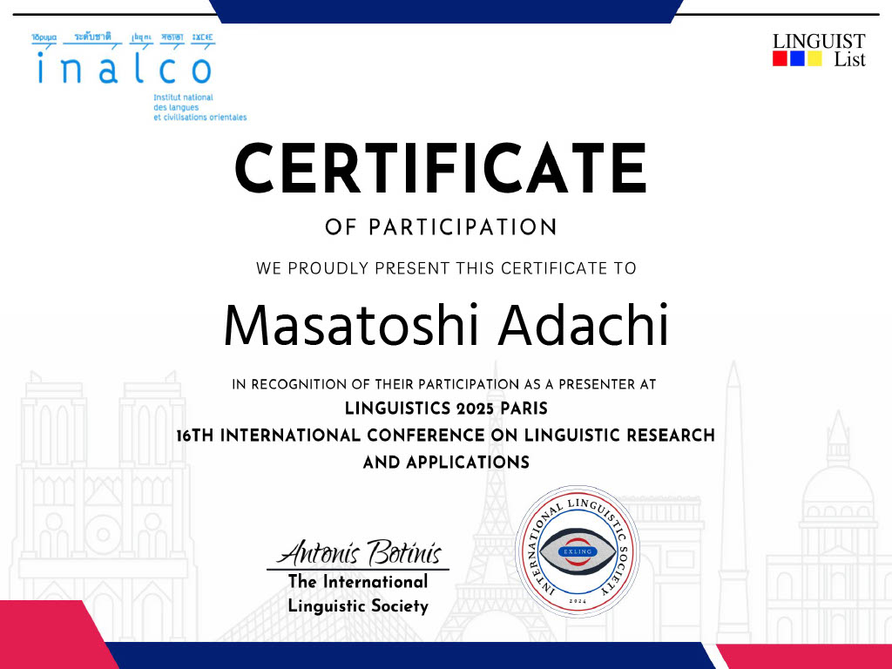

Conference Poster
パリで開催された学会にて発表したポスターセッションの資料です。
画像をクリック、またはボタンからPDFをダウンロードして詳細をご覧いただけます。

Official Records
パリで開催された国際学会（Linguistics 2025 Paris）の公式資料です。
Certificate of Participation

発表者証明書：
The International Linguistic Societyより、プレゼンターとして正式に認定された証明書です。
Research Overview
Research Questions
1. グループワークにおけるフォーマル・インフォーマルなダイナミクスは、どのように創造性を促進、あるいは阻害するのか？
2. そのプロセスでどのような「制約（Constraints）」が出現し、パフォーマンスに影響を与えるのか？
Frameworks
Interthinking (Mercer, 2015)
対話を通じた思考の共有プロセス。
Bounded Rationality (Simon, 1957)
限定合理性。人間は限られた情報の範囲内で意思決定を行うという理論。
Data Analysis: 映像翻訳の現場から
実際のグループディスカッション（映像翻訳の字幕制作過程）における会話データを分析しました。
ポスター内の "Excerpt 1" では、メンバー間での「語彙の制約（Vocabulary constraints）」や「フィードバックの制約」がどのように発生し、それが最終的な翻訳案（Conclusion）にどう結びついたかを可視化しています。
Original: "Should I try something else?"
↓
Tentative (6/21): "他に何か試すべきかな？"
↓
Final (7/12): "それとももっと違うのがいい？"
※グループ内の権威性（Authority）や相互作用を経て、より自然な表現へ変化していく過程を追跡しました。